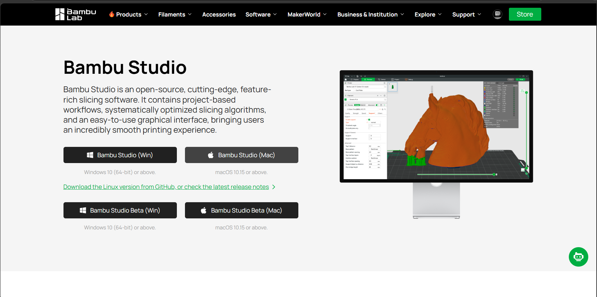
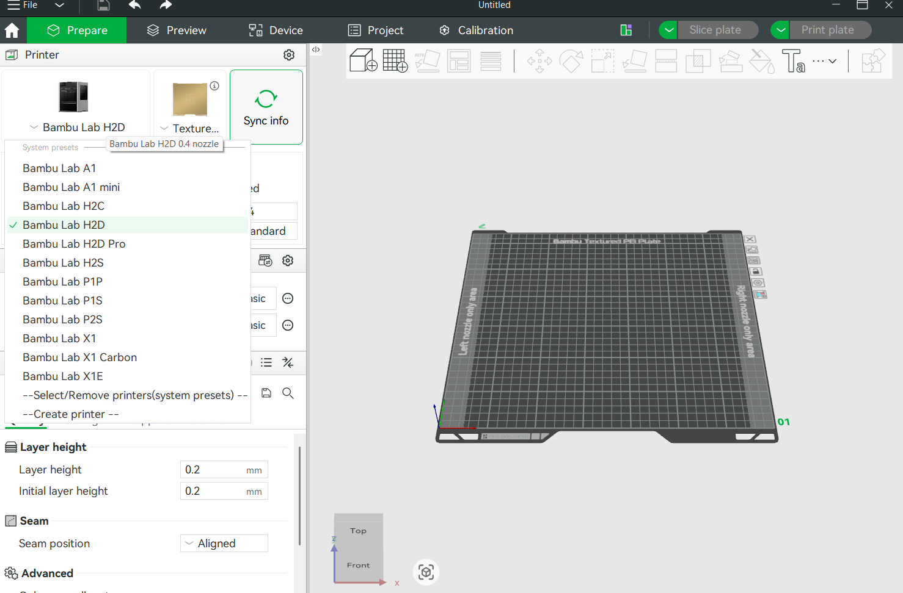
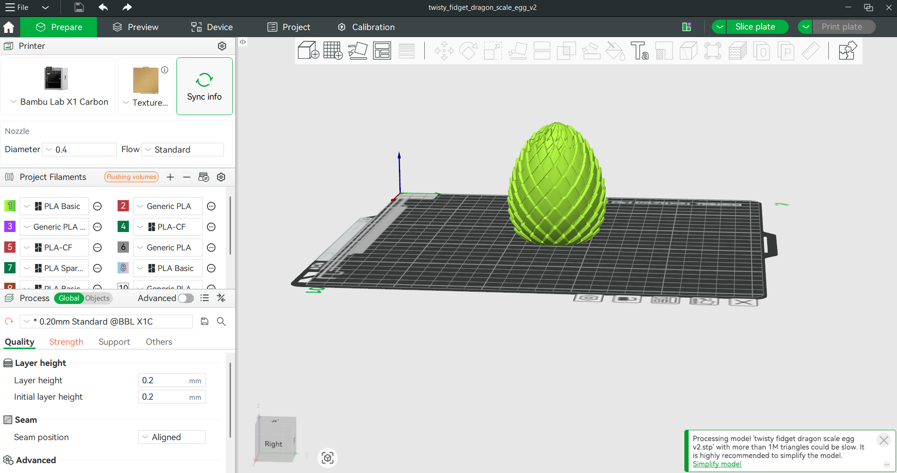
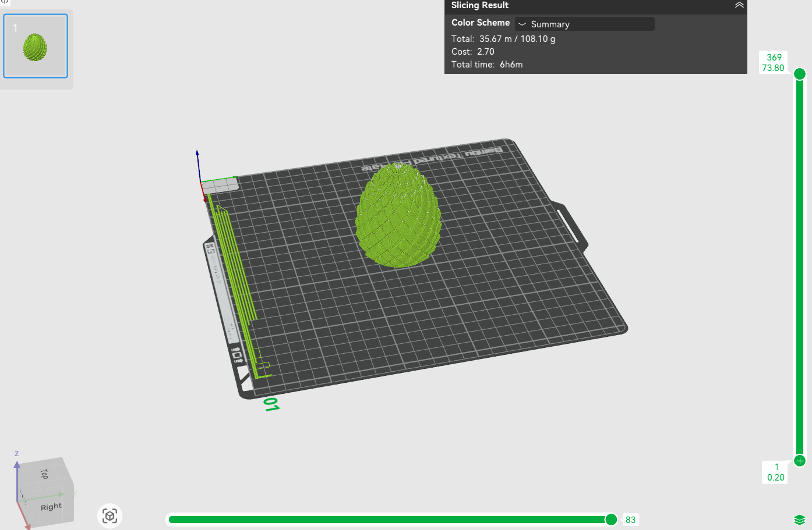
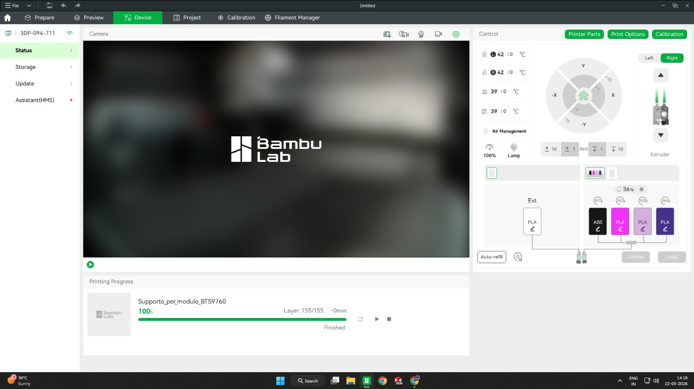

🖨️ Day 5: 3D Printing – Bambu Studio Slicer
1. Introduction to Bambu Studio
Bambu Studio is a slicing software used for preparing 3D models for 3D printing. It is developed for Bambu Lab printers and helps users convert 3D models into printable machine instructions. Bambu Studio is based on modern slicing technology and provides fast slicing, printer monitoring, and wireless file transfer.
2. Uses of Bambu Studio
- Preparing 3D models for printing
- Slicing STL and OBJ files
- Setting print parameters
- Controlling 3D printers
- Monitoring print progress
- Sending files wirelessly to printers
- Managing supports and infill
- Optimizing print quality
3. Purpose of Bambu Studio
The main purpose of Bambu Studio is to convert 3D models into G‑code instructions that a 3D printer can understand.
Benefits:
- Improves print quality
- Reduces printing errors
- Saves printing time
- Controls temperature and speed
- Makes 3D printing easier for beginners
4. Installation Process of Bambu Studio (Step‑by‑Step)
Step 1: Open Official Website
Visit the official download page: bambulab.com/en/download/studio

Step 2: Download Bambu Studio
Select your operating system (Windows, macOS, or Linux) and click Download.
Step 3: Open the Installer
Go to the Downloads folder and double‑click the installer file.
Step 4: Start Installation
Click Next, accept terms and conditions, and choose the installation location.
Step 5: Complete Installation
Click Install, wait for the process to finish, then click Finish.
Step 6: Open Bambu Studio
Launch Bambu Studio, sign in with your Bambu account, and connect your printer.

5. Slicing Process in Bambu Studio
Step 1: Open Bambu Studio
Launch the software from the desktop or start menu.
Step 2: Add Printer
Click Add Printer, select your Bambu printer model, and connect via Wi‑Fi or LAN.
Step 3: Import 3D Model
Click File → Import and select your STL, OBJ, or 3MF file.

Step 4: Position the Model
Use tools to move, rotate, and scale the object on the build plate.
Step 5: Set Print Parameters
Choose layer height, infill percentage, print speed, support settings, and filament type.

Step 6: Slice the Model
Click Slice Plate. Bambu Studio converts the 3D model into printer instructions (G‑code).

Step 7: Preview the Print
Check print layers, estimated time, and material usage.
6. Uploading File to the Printer
Method 1: Wi‑Fi Upload
Step 1: Connect printer and computer to the same Wi‑Fi network.
Step 2: In Bambu Studio, click Send.
Step 3: Select your printer.

Step 4: Click Print or Upload. The file is sent directly to the printer.

Method 2: SD Card / USB
Step 1: Export sliced file as G‑code or 3MF.
Step 2: Copy file to SD card or USB drive.
Step 3: Insert storage device into the printer.
Step 4: Select file from printer screen and start printing.
7. Advantages of Bambu Studio
- Easy user interface
- Fast slicing
- Wireless printing
- Real‑time monitoring
- Automatic support generation
- Multi‑color printing support
📌 Key Takeaways
- Bambu Studio is a powerful, beginner‑friendly slicer for Bambu Lab printers.
- It converts STL/OBJ files into G‑code with full control over print parameters.
- Wireless file transfer and real‑time monitoring greatly streamline the printing workflow.
- Understanding slicer settings (layer height, infill, supports) is essential for successful prints.
🎯 Conclusion
Bambu Studio is a powerful and beginner‑friendly slicing software for 3D printing. It helps users prepare models, optimize print settings, slice files, and directly send them to 3D printers efficiently. Mastering Bambu Studio is an essential skill for rapid prototyping and additive manufacturing projects.